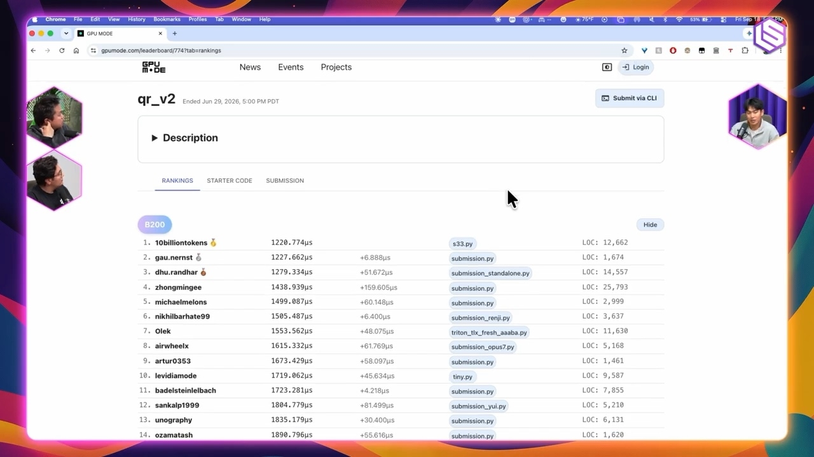
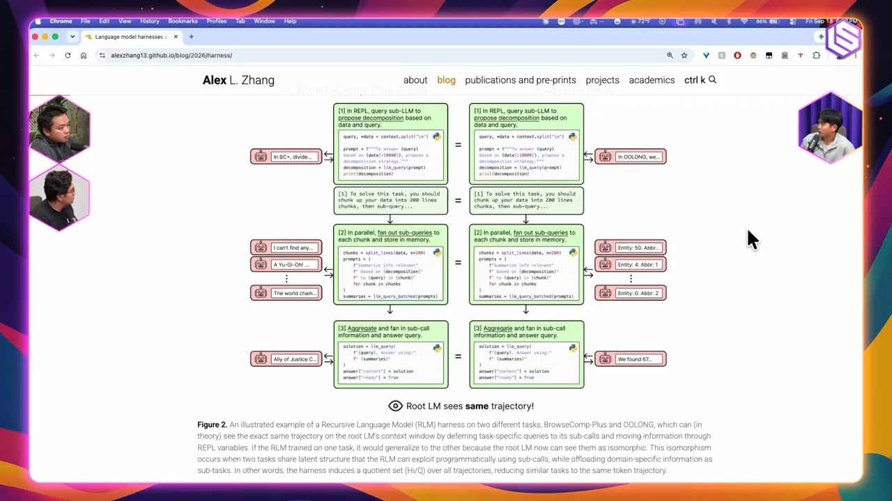
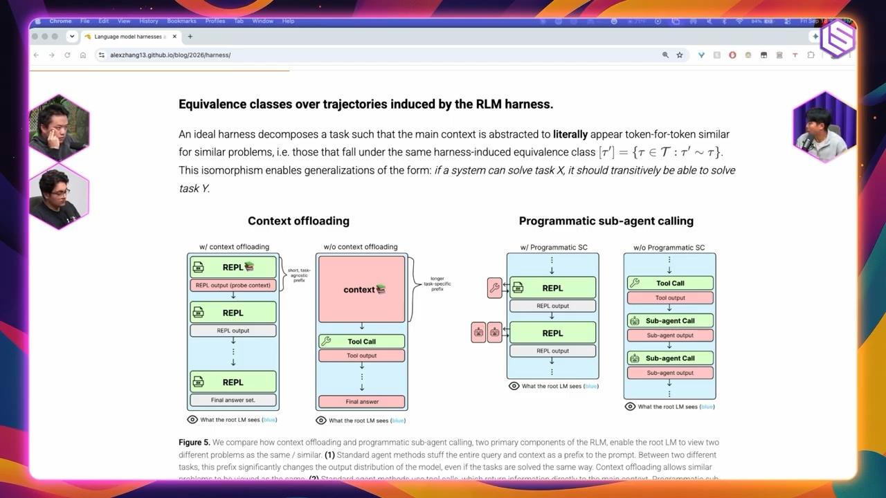
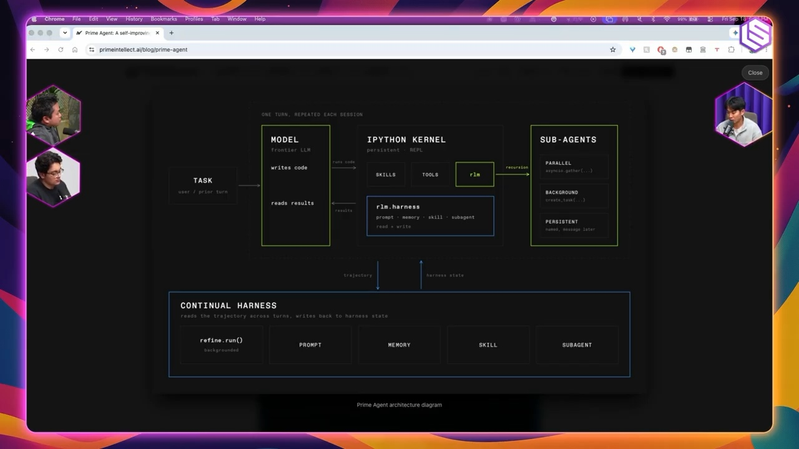
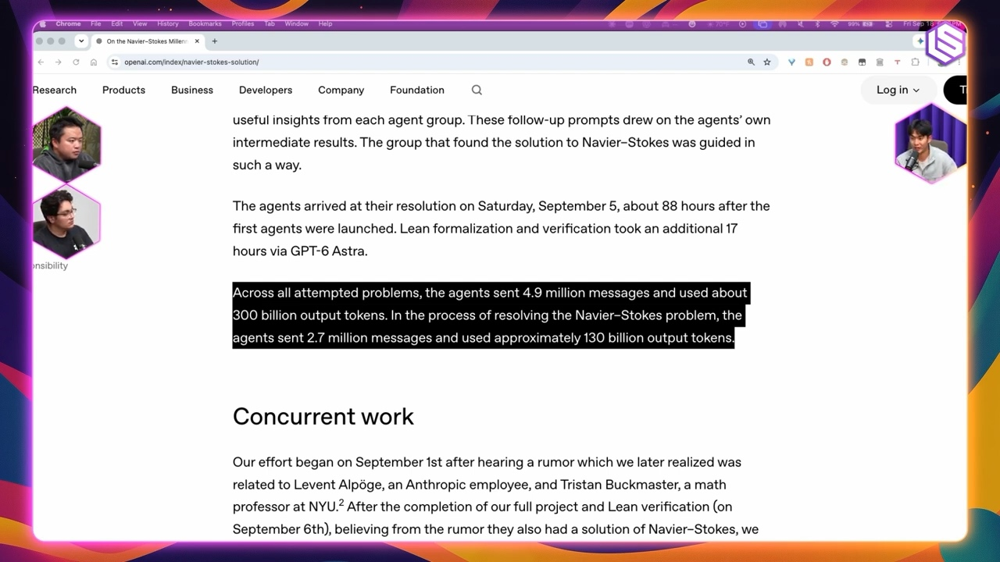
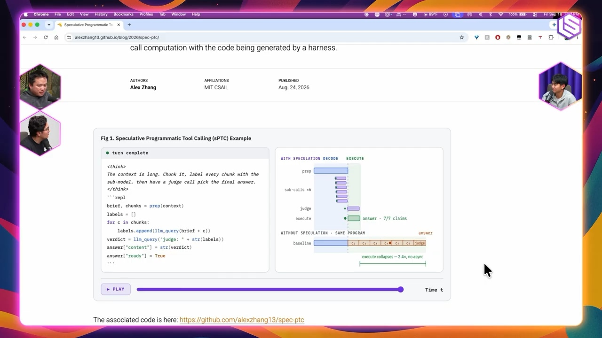

Executive summary
The central argument: intelligence depends on the program around the model
Most agent products place a language model inside a loop: give it the accumulated trajectory, let it choose a tool, append the result, and repeat. Zhang's criticism is not that this pattern is useless. It is that the industry has converged on it so strongly that different coding agents often vary more in polish, prompts, and cost than in the computational structure they expose to the model.
Recursive Language Models (RLMs) offer a sharper alternative. Instead of forcing the entire input and every intermediate result through one ever-growing chat history, the system keeps large context in an external environment. The model writes code to inspect, partition, transform, and aggregate that context. When a semantic judgment is needed, the code can invoke another model call on a smaller local subproblem. Recursion therefore becomes a programmable operation, not merely a supervisor handing natural language tasks to named agents.
- A harness is an algorithm, not packaging. It chooses what state exists, what the model observes, what actions are legal, and how partial answers become a final result.
- Context offloading changes the scaling problem. Long inputs can remain in files, variables, or a REPL while the model retrieves only the pieces required for each local call.
- Recursion can expose reusable programs. A retrieval problem and an aggregation problem may share the same high-level decomposition even when their surface content looks unrelated.
- More agents mostly buy more search. Without strong verification, coordination, and convergence rules, a swarm also scales duplication, noise, and cost.
- Human expertise remains a powerful optimizer. One domain insight can remove a vast region of unproductive machine search, especially when the objective is incomplete.
The video is a research interview, not an audited comparison of production platforms. Claims about harness sameness, capability overhang, month-long autonomous work, and future machine-native languages are Zhang's hypotheses or informed opinions. RLM benchmark results support a narrower claim about particular long-context tasks. Product-scale reliability, security, and economic advantage still require independent evaluation in the target workflow.
A useful mental model
Separate model capability, harness structure, and search budget
The conversation repeatedly crosses three layers that are easy to conflate. A larger model may solve more local problems. A better harness may decompose the same global task into easier calls. More compute may explore more candidate solutions. Observing a better result does not by itself tell us which layer caused the gain.
Model
Learned knowledge, reasoning behavior, code generation, tool selection, and local verification ability.
Harness
State representation, tool API, recursion, memory, planning, context policy, retries, and aggregation logic.
Search budget
Parallel attempts, tokens, wall-clock time, environments, and the verifier used to select or reject candidates.
This separation matters for platform teams. If a workflow fails because the model lacks domain knowledge, another orchestration layer may only hide the failure. If it fails because relevant context cannot fit or be navigated, a larger model may be an expensive substitute for a better state design. If success comes only after thousands of parallel attempts, the result may be a search achievement rather than a repeatable agent capability.
From GPU Mode to KernelBench
Benchmarks need a verifier, but the verifier defines the game

Kernel generation is a useful case study because the reward looks unusually concrete: preserve correctness and reduce execution time. KernelBench contains 250 workloads and evaluates generated kernels against PyTorch baselines. Its paper reports that, at the time of publication, frontier models matched the baseline on fewer than 20 percent of problems under the benchmark's fast-and-correct metric. Feedback and iterative execution helped, but the task remained difficult.
Even here, the objective is not complete. A kernel can be fast in isolation but less useful inside a full model. End-to-end systems may deliberately keep data in cache, fuse operations, or trade local speed for less movement at the next layer. Hardware, numerical tolerance, compilation cost, input shape, warm-up, and stability all influence what “faster” means. A model can also exploit a weak benchmark instead of discovering a generally useful optimization.
Zhang's broader lesson is that expertise changes the search distribution. A swarm can spend enormous token budgets exploring candidates, while one expert can identify a constraint, data-flow property, or invalid assumption that eliminates most of that space. AI does not make expertise obsolete; it can make expert verification the scarce resource.
Research taste
Academia's advantage is permission to investigate ideas that look trivial
The interview's most human section concerns research taste. Zhang argues that academic researchers cannot usually beat industrial labs by following the same obvious hill-climbing path with fewer GPUs and less data. Their comparative advantage is the freedom to make a strange bet before it is legible as a product.
RLMs, SWE-bench, ReAct, and work such as Quiet-STaR can look deceptively simple after the fact. The intellectual contribution is often not a complicated mechanism; it is choosing the right abstraction early and showing why the field should care. A good paper can define a useful problem or computational form before it wins a leaderboard.
It does not mean maximizing novelty language or skipping evidence. It means accepting that many projects fail, while reserving some work for questions that current industrial incentives underexplore. The bet still needs a falsifiable mechanism and disciplined experiments.
Harnesses as programs
A tool loop silently encodes a theory of problem solving

Next-token prediction is an awkward interface for tasks that need navigation, experimentation, and revision. A coding agent cannot reasonably receive an entire repository and emit the perfect patch in one pass. The harness turns a single predictor into an iterative process by exposing search, files, shells, tests, and edit operations.
That process is highly opinionated. It decides whether observations are appended verbatim, summarized, or stored externally. It decides whether tools are selected through JSON calls or composed as code. It decides which errors the model sees, when context is compacted, and whether parallel workers share state. These choices act like an inductive bias: they make some solution programs easy to express and others awkward.
State is architecture
Chat history, files, database rows, variables, and checkpoints are different computational objects, not interchangeable forms of “memory.”
Tools are a language
A flat tool menu encourages one-call-at-a-time behavior. Code supports loops, functions, filtering, branching, concurrency, and reusable composition.
Training sees the harness
Once models are trained on agent trajectories, the harness is part of the learning environment rather than a neutral runtime.
Evaluation must see the trace
Final-answer accuracy cannot reveal wasted calls, hidden state loss, unsafe actions, or a verifier that selected the answer by luck.
RLM architecture
Keep the world outside the prompt; use code to decide what enters

The official RLM paper frames a long prompt as an external environment. The model can programmatically examine and decompose it, then recursively invoke itself. In the reported experiments, this enabled inputs up to two orders of magnitude beyond the base model's context window and improved performance on four long-context tasks at comparable or lower query cost. Those are task-specific results, not proof that every workload benefits.
The most important difference from a conventional named-agent graph is programmability. “Researcher,” “critic,” and “writer” are organizational metaphors. An RLM instead exposes a computational substrate: the root can create a loop over chunks, call the model only where semantic interpretation is needed, filter results with deterministic code, and recursively repeat the pattern.
| Dimension | Ordinary agent loop | RLM-style runtime |
|---|---|---|
| Primary state | Growing conversational trajectory | External environment plus selected model context |
| Composition | Sequential tool calls and handoffs | Code, functions, loops, branching, and recursive calls |
| Long input | Stuff, retrieve, or compact into prompt | Inspect in place and pull local slices when needed |
| Subagent result | Usually natural-language message | Value returned into a program for further processing |
| Main risk | Trajectory bloat and brittle handoffs | Unsafe generated code, recursion cost, and weak aggregation |
Compositional generalization
Make the global problem out-of-distribution but the local calls familiar
Zhang's deeper hypothesis is that recursion can change what the model learns. Two tasks with very different wording may reduce to the same program: partition an input, ask a bounded question over each part, validate local outputs, and aggregate them. If training exposes that structure, the system may reuse the high-level program on new domains or much longer inputs.
The interview describes results where strategies learned on shorter tasks transferred to tasks 8 to 30 times longer, and where a high-level behavior transferred across superficially different math and writing problems. The claimed mechanism is local in-distribution reasoning: the complete task may be unfamiliar, but each recursive call sees a smaller problem close to something the model already knows how to solve.
Decomposition helps only when the task is actually decomposable, local answers preserve the information needed globally, and the aggregation operation is reliable. Cross-chunk dependencies, irreversible early filtering, correlated errors, and adversarial inputs can all break the induction.
Prime Agent
Persistent execution turns memory into an inspectable workspace

Prime Agent's RLM runtime documentation makes the abstraction concrete. The agent works in a persistent Python REPL and can invoke recursive subagents as native operations. The host runtime, not the model, owns lifecycle and accounting. Variables and artifacts can survive between turns, while compaction keeps the conversational layer manageable.
Persistence is valuable because workers can communicate through shared artifacts instead of re-explaining every observation in natural language. It is also dangerous. A durable REPL can retain stale variables, sensitive data, poisoned files, and side effects from earlier steps. Production systems need isolated execution, explicit scopes, quotas, audit logs, deterministic cleanup, and a way to reproduce the state that produced an answer.
Agent swarms
Parallelism scales exploration faster than it scales judgment

A swarm increases the number of hypotheses, implementations, and critiques a system can generate. That is valuable when solutions are sparse and a strong external verifier exists. But every extra worker creates overlap, communication, scheduling, and selection costs. If workers share the same model and prompt, their errors may also be correlated rather than independent.
The video occasionally describes the OpenAI mathematics work as involving “10,000 agents.” OpenAI's own Navier-Stokes article is more precise: its Euler phase used nearly 100 agents; the Navier-Stokes run produced about 2.7 million messages and roughly 130 billion output tokens over 88 hours. Across the full project, OpenAI reports 4.9 million messages and 300 billion output tokens. Those numbers demonstrate extraordinary search scale, but not a generic recipe for economical enterprise workflows.
Kimi's current swarm documentation presents a more explicitly organized product pattern: a commander delegates to specialist workers, contexts are sharded, and the service advertises up to 300 agents and 4,000 tool calls. The reported speed and quality improvements are vendor claims and should be tested against a sequential or small-team baseline. Its coding documentation also notes the important economics: every subagent consumes tokens, returns only a final result to the parent context, and built-in subagents do not recursively spawn more workers by default.
Coordination
Who owns which region of the search space, and how is duplicate work detected?
Verification
Can the evaluator distinguish a correct result from persuasive consensus?
Convergence
What stops exploration, resolves incompatible answers, and preserves minority evidence?
Economics
Does marginal answer quality justify tokens, environments, latency, and human review?
Open-ended research
Generating more ideas is easier than recognizing the hidden gem
Evolutionary and multi-agent systems can continuously propose, mutate, test, and recombine ideas. This resembles open-ended research only when the system also preserves interesting novelty and changes direction intelligently. With a fixed benchmark, the objective supplies that pressure. In science, the important result may be the one that violates the current scoring rule.
The AI Scientist v2 from Sakana AI is a useful adjacent example. Its paper reports an automated pipeline that produced three workshop manuscripts. This is evidence that substantial pieces of the research loop can be automated under a designed environment; it is not evidence that the system independently chooses the most valuable scientific questions or replaces expert peer judgment.
Zhang's position is pragmatic: open-ended systems still need steering. The scarce capability moves from producing candidates to defining worthwhile directions, designing feedback, spotting anomalies, and deciding when a strange result deserves more resources.
Speculative tool calling
Execute predictable branches early, but never speculate irreversible actions

Programmatic tool use creates a systems opportunity. If generated code will eventually issue several independent retrieval calls, static analysis or a runtime can launch them in parallel before the model has finished narrating the entire plan. Recent work on ToolSpec and real-time speculative tool calling explores this family of latency optimizations.
The analogy to speculative decoding is tempting but incomplete. A wrongly predicted token can be discarded cheaply. A wrongly predicted tool call may spend money, consume rate limits, expose data, modify external state, or trigger an irreversible action. Speculation is safest for pure, idempotent, read-only operations with bounded cost and reliable cancellation.
Classify tools by side effect. Permit speculation only for an allowlist of read operations; attach deadlines, budgets, and cancellation; deduplicate identical calls; and require the finalized plan before any write, purchase, message, deployment, or privilege change.
Capability overhang
Today's models may be underused, but reliability does not emerge from optimism
Zhang suspects current models could perform much more useful work if harnesses translated their strong coding and mathematical abilities into other domains. He imagines a general system that can take an intern-like assignment, work for a long time, and complete the straightforward parts reliably without requiring a custom agent for every narrow workflow.
This is a valuable design target, not an established capability. Long duration multiplies small failure probabilities. A system that is correct on 99 percent of independent steps succeeds over 500 steps only about 0.66 percent of the time if one error is fatal. Real workflows are not independent, but the arithmetic explains why checkpoints, invariant tests, bounded retries, reversible actions, and human review matter more as the horizon grows.
Speculative frontier
Could machines reason in a representation better than English?
The closing discussion asks whether English and today's code languages constrain model reasoning. Human languages package time, social relationships, causality, and categories differently. A machine might prefer a representation that reveals a whole relational structure at once, closer to diffusion or a functional constraint system than sequential prose.
This is the interview's most speculative idea. An opaque internal language could improve compression or computation while making oversight harder. For practical systems, a useful split may be to allow latent or machine-native internal operations but require inspectable plans, typed tool calls, reproducible artifacts, and human-readable evidence at the control boundary.
Platform implications
What this means for an agentic AI platform
The strongest product lesson is to stop treating Master Agent, Sub-Agent, Skill, and Tool as four prompt templates. They are runtime contracts with different responsibilities. A platform for business analysts should expose those contracts visually while keeping execution policy explicit and testable.
Master Agent: own the objective
Hold the user goal, business constraints, completion criteria, budget, escalation policy, and final accountability. Avoid duplicating every specialist instruction here.
Sub-Agent: own a bounded context
Define input and output schemas, accessible data, allowed skills, maximum cost, stop condition, and evidence returned to the parent.
Skill: own a reusable method
A cognitive skill produces a typed decision or artifact. An actionable skill declares required tools, preconditions, side-effect class, confirmation rule, and rollback behavior.
Tool/MCP: own an external capability
Publish a strict schema, authorization scope, idempotency, latency and cost expectations, error semantics, observability, and whether calls may run speculatively.
Business Flow Markdown should compile into this runtime rather than act as a long prompt. Each step needs an owner, typed inputs and outputs, evidence requirements, deterministic gates, allowed side effects, retries, timeout, human checkpoint, and terminal state. RLM-style execution can then be one strategy for steps that need large-context decomposition; a deterministic workflow remains better for stable business rules.
Evaluate the smallest unit that can fail. Measure routing before end-to-end quality, retrieval before answer fluency, tool parameters before workflow success, and aggregation before swarm scale. Add recursive workers only after a single-agent baseline identifies a context, decomposition, or parallel-search bottleneck.
Video guide
Jump to a specific part of the conversation
- GPU Mode, KernelBench, and AI-written kernels
- Human expertise versus brute-force search
- Research taste and taking big bets
- GEV and rethinking the language model
- Why coding-agent harnesses look similar
- Harnesses as compositional generalizers
- Recursive Language Models explained
- Prime Agent and persistent subagents
- OpenAI swarms and the future of language models
- Open-endedness and Sakana AI
- Kimi versus OpenAI agent swarms
- Capability overhang and speculative tools
- Neuralese, future research, and AI for science
Sources and limitations
What this article is based on
- Latent Space interview with Alex Zhang, summarized from the complete auto-generated English caption track. Auto-captions can mishear names and technical terms.
- Recursive Language Models, the primary paper for the RLM mechanism and benchmark claims.
- KernelBench, the primary paper for the benchmark design and reported baseline results.
- Official RLM implementation and Prime Agent RLM runtime documentation for current execution details and safety caveats.
- OpenAI's Navier-Stokes report for the official agent, message, token, and runtime figures.
- Kimi swarm documentation and Kimi Code subagent documentation. Performance claims remain vendor-reported.
- AI Scientist v2 paper for the automated-research example.
- ToolSpec and real-time speculative tool calling for adjacent latency research.
Screenshots are explanatory frames from the source video. This article synthesizes the interview with primary technical sources; it is not a transcript, independent reproduction of every result, or endorsement of any product claim.